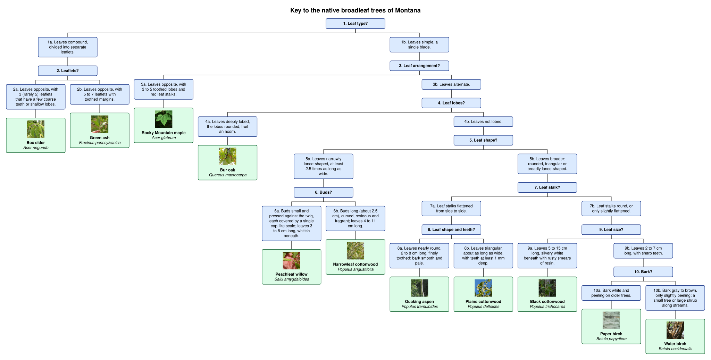

An R package to manage dichotomous keys.
Dichotomous keys
Dichotomous keys are bifurcating trees that are often used in species identification. More precisely, dichotomous keys are binary categorical decision trees with unique leaves. They have been a staple of taxonomic identification for centuries — Lamarck’s Flore française (1778) is often credited with popularizing the form — and remain in everyday use in field guides and laboratory manuals today.
Relationship to phylogenetic trees
Despite their different uses, phylogenetic trees are similar to dichotomous keys: - the paths are traversed using mutation “decisions” instead of visible phenotypes - all points on a phylogenetic tree represent an organism that actually existed (instead of a group of possibilities)
dimoose supports phylogenetic trees in which the mutations are known, such as PhyloTree, and ships PhyloTree Build 17 (the human mitochondrial DNA phylogeny, as distributed by Haplogrep 3).
Package methods
This package provides tools to: - convert from and to popular formats including consensus matrices, ape phylo, data.tree, data frames, JSON, YAML, and Newick - merge and prune dichotomous keys - generate interactive dichotomous keys (“wizards”) as self-contained, mobile-friendly HTML - generate keys automatically from a pile of labelled photos with a vision model (CLIP, or any model that produces embeddings) or from a multiple sequence alignment with a phylogeny program, and follow those keys by machine - produce training data for machine learning using splits - interoperate with the phylogenetics ecosystem (ggtree/treeio, igraph, Nextstrain/Auspice, Haplogrep) - metadata slots for provenance and supporting guide images - perform basic lexical analysis, and specialized data types (single nucleotide variations) of criteria and taxa - build mixed effects conditional inference trees (mecits)
Getting started
Installation
Install dimoose from R-universe, which has ready-built versions for Windows, macOS and Linux:
install.packages("dimoose", repos = c("https://leipzig.r-universe.dev", "https://cloud.r-project.org"))The package was called moose until version 0.1.0; it was renamed because CRAN has an unrelated package of that name.
Or install the current source from GitHub:
install.packages("remotes")
remotes::install_github("leipzig/dimoose")That is enough to read, build, check and export keys. Some features use optional packages, which are only needed if you use that feature:
| Feature | Also needs |
|---|---|
Keys from a sequence alignment (keyFromAlignment()) |
ape, and phangorn for midpoint rooting, UPGMA, parsimony, maximum likelihood and proteins |
Keys from photos (visionModel(), embedImages()) |
reticulate (1.41 or later), which sets up Python and its packages on first use |
Mixed-effects conditional inference trees (mecit()) |
partykit and lme4, and glmertree for method = "mob"
|
Phylogenetics exports (toTreedata(), toIgraph(), toAuspiceJSON()) |
tidytree, tibble and ape; igraph; jsonlite
|
To install all of the optional R packages at once, and build the vignettes:
remotes::install_github("leipzig/dimoose", dependencies = TRUE, build_vignettes = TRUE)A first key
library(dimoose)
sharks <- sharkKey()
summary(sharks)
exportWizard(sharks, "sharks.html") # an interactive, self-contained wizardTo write your own key in a spreadsheet, see A photo key to Montana’s broadleaf trees. There are also vignettes on automated key generation from photos and from a sequence alignment, and on mixed-effects conditional inference trees.
Included datasets
Five example keys ship with the package. They come from very different sources and are built in different ways, but they are all ordinary dimoose objects: they share the same fields (leads, df, meta, taxa, desc) and methods (print(), summary(), validate(), toDataTree(), toNewick()) and all work with exportWizard() and the phylogenetics exports.
Sharks — sharkKey()
FishBase key 1, the Key to the families of sharks in the Western Central Pacific (Compagno 1998), parsed from saved FishBase pages in inst/extdata/fishbase/. A classic, human-authored morphological key: 23 couplets, 24 families. It carries guide-image links, so the exported wizard shows a figure at each lead. This is the key the importFishbase() / parseFishbase() machinery produces from a live or saved FishBase page.
Arachnids — arachnidaKey() (dataset arachnida)
The Key to the Orders of Arachnida from Triplehorn & Johnson (2005), Borror and DeLong’s Introduction to the Study of Insects, 7th ed., transcribed by hand (see data-raw/arachnida/). 11 couplets, 11 orders (Schizomida is reached from two couplets, so it is a small DAG rather than a strict tree). The arachnida dataset is the underlying table of leads; keyFromLeads() turns it into the key.
Vibrio — vibrioKey() (dataset vibrio)
A key generated from a biochemical consensus matrix rather than written by a person. The vibrio dataset is the identification matrix of Noguerola & Blanch (2008), 74 taxa × 45 tests (+/-/(+)/(-)/v/ND). vibrioKey() scores the tests, fits an rpart classification tree, and converts it with keyFromRpart() into a 73-couplet key reaching all 74 species. Species the tests cannot separate share a result. This is the template for turning any feature matrix into a dichotomous key.
PhyloTree — phylotreeKey() (datasets phylotree17, phylotree17_mutations)
PhyloTree Build 17, the human mitochondrial DNA phylogeny (van Oven 2015), as distributed by Haplogrep 3: 5,435 haplogroups and 13,384 mutations. phylotree17 is one row per haplogroup (name, parent, depth, subclade count, mutations); phylotree17_mutations is one row per mutation (position, type, ancestral/derived base). phylotreeKey() turns the tree, or any subtree, into a key whose “characters” are the defining mutations — for example phylotreeKey("H2a"). The full tree is large (2,420 steps), so a subtree or a maxDepth is usually more practical for the wizard. This is the “phylogenetic tree as a key” case, where the decisions are mutations rather than visible phenotypes.
Montana broadleaf trees — montanaKey() (dataset montana)
A key to the eleven native broadleaf (hardwood) trees of Montana, written for dimoose: 10 couplets, 11 species, each checked as native in the Montana Field Guide and USDA PLANTS, with 14 photos from Wikimedia Commons (most taken in Montana by Matt Lavin). It is kept as a plain spreadsheet, inst/extdata/montana/montana-key.csv, next to its photos, and keyFromSpreadsheet() turns it into the key, so it doubles as a template: copy the folder, edit the sheet in Excel or Google Sheets, and build your own key in one line. keyDiagram() draws any key as a box diagram, and exportWizard() turns it into a page you can use on a phone: try the Montana key.

Automated key generation
Most keys are written by people. dimoose can also generate one from data: from a multiple sequence alignment, or from a pile of photos. Either way the result is an ordinary dimoose key that works with exportWizard(), classify() and the phylogenetics exports.
From a multiple sequence alignment
One command takes aligned sequences to a key. A phylogeny program builds the tree, dimoose roots it, and every fork becomes a couplet whose leads are the alignment sites that tell its two sides apart:
library(dimoose)
fasta <- system.file("extdata", "aligned.fasta", package = "dimoose") # or the path of your own FASTA file
key <- keyFromAlignment(fasta)
exportWizard(key, "key.html")
head(key$leads[, c("Statement", "Character", "Next", "Taxon")], 4)
#> Statement Character Next Taxon
#> 1 1 106G 35G 2
#> 2 1 106A 35A 3
#> 3 2 201T 234C 297G - No305
#> 4 2 201C 234T 297A - No1114Saligned.fasta is an example that ships with dimoose: 15 wood mouse cytochrome b sequences. A second one, mtdna.fasta, has whole human mitochondrial genomes for 14 haplogroups. Numbered by the sequence of the rCRS’s haplogroup and rooted on L0, its key asks about the familiar PhyloTree positions:
mtdna <- system.file("extdata", "mtdna.fasta", package = "dimoose")
mt <- keyFromAlignment(mtdna, reference = "H2a2a1", outgroup = "L0a1")
mt$leads[7:8, c("Statement", "Character", "Next")]
#> Statement Character Next
#> 7 4 8701A 9540T 10873T 5
#> 8 4 8701G 9540C 10873C 12Options:
-
The phylogeny program is chosen with
tool:"nj"(the default) and"bionj"useape;"upgma","parsimony"and"ml"usephangorn;"fasttree"and"iqtree"run the FastTree or IQ-TREE program if it is installed. -
A tree from any other program goes in as
tree = "my.nwk"(a Newick file). -
The root is the
outgroupyou name, or the midpoint. -
Site numbers are alignment columns, or positions in a
referencesequence. -
New sequences are placed with
classify(key, alignmentScores(key, new)).
See the alignment vignette.
From a pile of photos
A key built from the example photos, followed in the wizard that exportWizard() writes. Each choice asks about one sniglet and shows crops of it. (Full-quality video)
You need photos, and a label for each one saying what it shows. The photos are embedded with a vision model (CLIP ViT-B/32 by default) that runs in Python, but there is nothing to install by hand: the first visionModel() call sets up a private Python with the packages it needs (through reticulate, 1.41 or later) and reuses it afterwards. That first call downloads several gigabytes, mostly PyTorch.
Then it is five steps. They run as written on the example photos that ship with dimoose: 36 small photos of six fruits, from the Fruits-360 dataset (CC BY-SA 4.0). For your own photos, give the path of your folder instead.
library(dimoose)
# 1. Photos and labels. With one folder per class (pics/banana/..., pics/kiwi/...),
# each photo is labelled by its folder.
pics <- system.file("extdata", "pics", package = "dimoose")
images <- imageSet(pics)
# Class in the file name: imageSet("my_photos", label = function(x) sub("_.*$", "", x))
# Labels in a table: imageSet(tab$file, label = tab$species)
# 2. A vision model
model <- visionModel() # regular CLIP; for organisms, visionModel(name = "bioclip")
# 3. Photos -> embeddings: one for each photo, and one for each of 4 x 4
# overlapping tiles of it, so that features are local parts of the photo
emb <- embedImages(model, images)
# 4. Generate sniglets (kinds of region that recur across photos, each given a
# coined name) and grow a key on them
sniglets <- discoverSniglets(emb$patches, k = 40)
scores <- snigletScores(emb$patches, sniglets$centroids)
key <- keyFromSniglets(scores, images, sniglets, method = "rpart")
# 5. Add example crops and export an interactive page
key <- patchExemplars(model, key, images)
exportWizard(key, "key.html")
# Identify a new photo with the key
new <- list.files(system.file("extdata", "new-photos", package = "dimoose"), full.names = TRUE)
classify(key, scoreImages(key, model, new))With one photo per class, use the default method = "balanced" in step 4 (the fordera method).
Sniglets, and renaming them
The features in step 4 are found by the model, by clustering the tiles of all the photos: each one is a kind of region that several photos have in common, such as a rough skin or a stem end. They have no names, so dimoose coins a pronounceable word for each one (gaithiark, glienglaund) and calls these sniglets. Both leads of a couplet describe something: one reads “Has glienglaund” and the other, where it can, says what those photos have instead (“Lacks glienglaund; has laussym”). The wizard shows example tiles on both leads, taken from every class that follows that lead. Once you have looked at them, give the sniglets real names:
snigletNames(key) # coined word, current name, definition, used by the key?
key <- renameSniglets(key, c(gaithiark = "a dull, finely textured skin"),
definitions = c(gaithiark = "Matt skin with a fine grain, as on a kiwi or a lemon"))
# or name them in a spreadsheet
write.csv(snigletNames(key), "names.csv", row.names = FALSE) # fill in name and definition
key <- renameSniglets(key, "names.csv")
exportWizard(key, "key.html") # leads now read "Has a dull, finely textured skin"The coined word stays as the sniglet’s permanent identifier: scores, machine tests and saved name tables keep working after a rename, and a blank name puts the coined word back. Only the names of sniglets the key uses matter.
Questions from a vocabulary
To ask questions in plain words from the start, give a vocabulary of contrasting features instead:
vocab <- data.frame(feature = c("a smooth skin", "a round shape", "a yellow colour", "green leaves on top"),
opposite = c("a rough skin", "a long shape", "a dark colour", "no leaves"))
txt <- embedTexts(model, vocabularyPrompts(vocab, "a photo of a fruit with {x}"))
qkey <- keyFromClusters(emb$image, images, vocab, txt, template = "a photo of a fruit with {x}")The photo vignette explains each step, and how to measure a key’s accuracy.
Choosing a model: CLIP or BioCLIP
The model is chosen in step 2, by the name you give visionModel():
| Your photos | Model | Call | First download |
|---|---|---|---|
| Anything: objects, products, vehicles, mixed subjects | CLIP ViT-B/32 (OpenAI), the default | visionModel() |
about 350 MB |
| Organisms: plants, animals, fungi, specimens | BioCLIP | visionModel(name = "bioclip") |
about 600 MB |
| Organisms, when accuracy matters more than speed | BioCLIP 2 | visionModel(name = "bioclip-2") |
about 1.7 GB |
For example, to build the key above with BioCLIP, replace step 2 with:
model <- visionModel(name = "bioclip")-
Only that one line changes.
embedImages(),discoverSniglets(),keyFromSniglets(),patchExemplars()andexportWizard()are called the same way with every model. -
Build and follow a key with the same model. The key records which model made it, and
scoreImages()warns, or stops, if you give it a different one. -
With BioCLIP, use sniglets. Its text side was trained on names of organisms, not on descriptions of what they look like, so vocabulary questions (
keyFromClusters()) work better with regular CLIP. - BioCLIP 2 is a larger model, so embedding takes several times longer.
Other models: name = "hf-hub:<organisation>/<model>" loads any open_clip model on the Hugging Face Hub whose image side is a vision transformer, and name = "local-dir:<folder>" loads a copy you have downloaded.
No Python at all: the R side works on plain matrices, so if you already have embeddings from some other encoder, pass them straight to discoverSniglets(), keyFromSniglets(), keyFromClusters() and featureScores().
Mixed-effects conditional inference trees
A mixed-effects conditional inference tree (MECIT) is a decision tree for clustered data. A random effect absorbs the differences between clusters, so the tree only splits on variables that matter within them. In mtDNA, this means a recurrent mutation can be found even though each large haplogroup has its own background, and the tree does not split on clade markers that merely track the haplogroup. mecit() implements RE-EM trees with conditional inference trees (Fu & Simonoff 2015). method = "mob" uses glmertree instead (Fokkema et al. 2018). A fitted tree is a key:
sim <- simulateExpression(n = 1000, genes = 20, seed = 1) # PhyloTree haplotypes + expression
fit <- mecit(sim$expr[, 1], sim$X, cluster = sim$samples$macro)
splitVariables(fit)
key <- keyFromMecit(fit) # couplets: "Carries 150" / "Does not carry 150"
classify(key, sim$X) # place samples in expression stratahaplotypeMatrix(), recurrentPositions() and macroHaplogroup() turn PhyloTree haplogroups into the 0/1 site matrix these trees split on. In a simulation study (analysis/mecit/), plain ctree and rpart split on clade markers for every gene that had only a haplogroup baseline. The MECIT made no false splits in 360 genes, and found every true site at effects of 1 SD or more. See the MECIT vignette. These functions need the suggested packages partykit and lme4, plus glmertree for method = "mob".
Interoperating with phylogenetics tools
A dimoose key is a tree, so it can be handed to the usual phylogenetics software:
k <- phylotreeKey("H2a")
toNewick(k) # quoted Newick, or labels = "safe" + a sidecar table
toNewick(k, annotate = "nhx") # lead text as NHX/BEAST comments
toTreedata(k) # a tidytree treedata for ggtree
toIgraph(k) # a DAG-faithful igraph (keeps shared couplets)
toAuspiceJSON(k) # Nextstrain/Auspice v2 JSON
readHaplogrep("tree.xml") # load any Haplogrep / PhyloTree tree XMLAcknowledgments
dimoose stores keys as an R6 object over a lead table, uses data.tree and rpart for its trees, and bridges to ape, partykit, tidytree and igraph.
FishBase key import is made possible by the work of Scott Chamberlain and Carl Boettiger on rOpenSci’s rfishbase and the R tooling for FishBase data.
The bundled PhyloTree Build 17 is taken from Haplogrep, whose tree files and documentation of PhyloTree’s notation made the PhyloTree key possible. Thanks to the Haplogrep authors (Schönherr, Weissensteiner, and others) at the Institute of Genetic Epidemiology, Medical University of Innsbruck and to Mannis van Oven for PhyloTree itself.
The image-based key work builds on the Imageomics Institute and the NSF HDR-BGNN (Harnessing the Data Revolution — Biology-Guided Neural Networks) effort, whose BioCLIP and TreeOfLife models make domain-specific biological embeddings possible.
Dimoose was built in Whitefish, Montana. The moose depicted in the logo is named Dichotomoose.